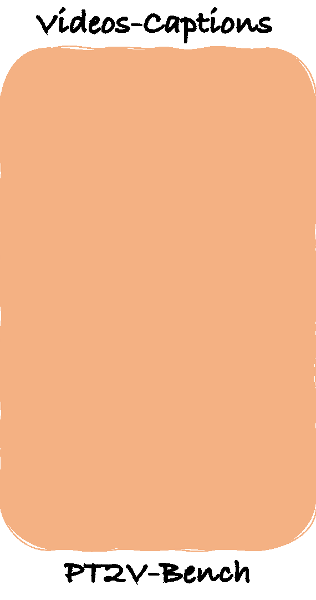
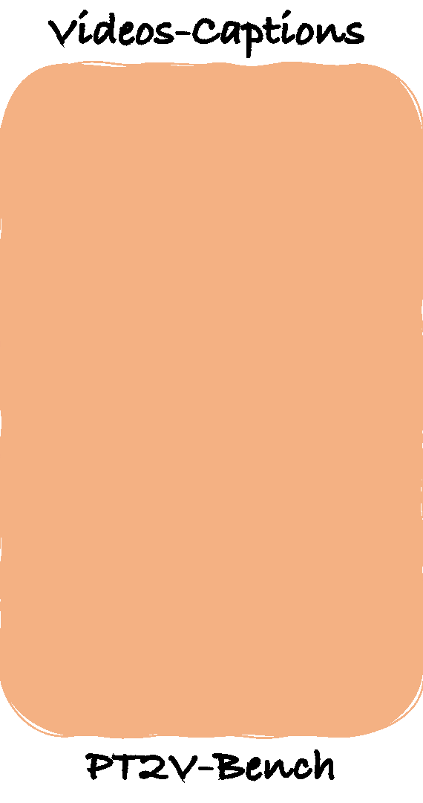

Personalized text-to-video (PT2V) generation aims to adapt a pretrained text-to-video model to generate customized videos of a unique subject or motion, via finetuning. To handle this problem, most of existing methods either employ image-based customization, or upgrade it with motion customization, or leverage large-scale video datasets to train subject-to-video generation. Though effective at large, these methods are not easily comparable to each other due to different backbones and implementations. In this work, we systematically analyze PT2V under the setting of LoRA finetuning by comparing three basic approaches among which we suggest a simple baseline VideoLoRA. In particular, we introduce a structured caption strategy to optimize video text descriptions and enable both subject and motion personalization. In addition, to facilitate evaluation, we curate a video dataset called PT2V-Bench, which includes videos and structured captions for 20 distinct subjects. Our results demonstrate that all three basic approaches can generate high-quality personalized videos, while VideoLoRA even captures the unique motion of the subject which is not observed in state-of-the-art methods.


 
